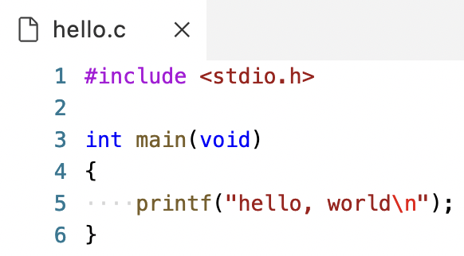
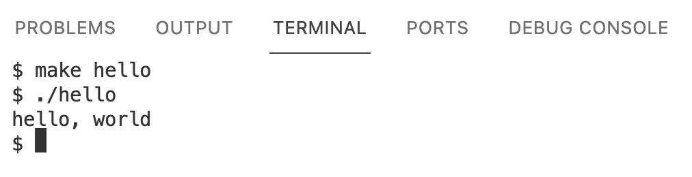
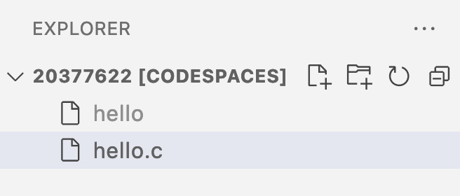
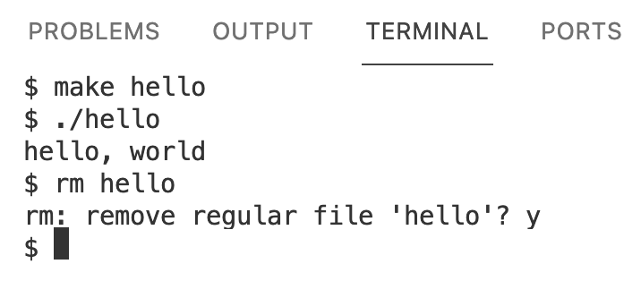
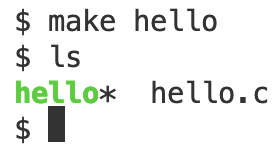

hello.c. Next, we need to convert it to machine code, or zeroes and ones that represent instructions that tell our computer to perform low-level operations.
- In Problem Set 1, we’ll learn how to access our own instance of VS Code.

- This terminal will be connected to our own virtual server, with its own operating system, set of files, and other installed programs that we access through the browser.
make hello. Nothing appears to happen, but we’ll now have another file that’s just called hello, which we can run with ./hello:
./hellotells our computer to find a file in our current folder (.), calledhello, and run it. And we indeed see the output that we expected.
hello.c (which we have open in our editor), and one called hello:
- The
make hellocommand created thehellofile containing machine code. - The sidebar is a graphical user interface, or GUI, with which we can interact visually as we typically do.
rm command:
- We run
rm helloto remove the file calledhello, and respondyfor “yes” to confirm when prompted.
ls command to list files in our current folder. We’ll compile our file again and run ls to see that a file called hello was created:
hellois in green with an asterisk,*, to indicate that it’s executable, or that we can run it.
./hello, we won’t see the changes we made. We need to compile our code again, in order to create a new version of hello with machine code that we can run and see our changes in.
makeis actually a program that finds and uses a compiler to create programs from our source code, and automatically names our program based on the name of the source code’s file.